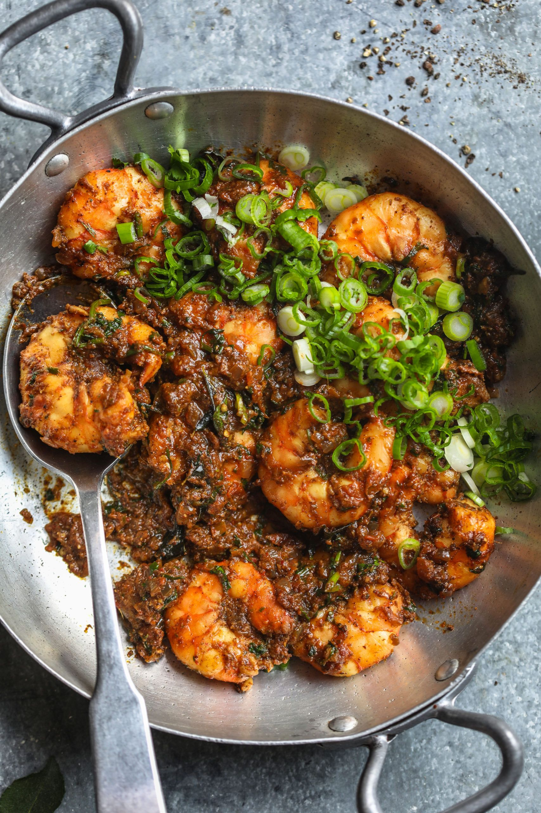

What is Shrimp Curry?
Shrimp curry is a delicious and flavorful dish made with succulent shrimp cooked in a rich and aromatic sauce. It typically includes a blend of spices like cumin, coriander, turmeric, and chili, creating a perfect balance of heat and depth of flavor. The curry sauce is often made with coconut milk or tomato-based, depending on regional variations. This dish is popular in many cuisines, including Indian, Thai, and Caribbean, and is often served with steamed rice or flatbreads for a satisfying meal. The combination of tender shrimp and the bold, complex curry sauce makes it a favorite among seafood lovers worldwide.
So lets make some Shrimp Curry
You have to gather these Ingredients
- ¼ cup vegetable oil
- 1 large onion, chopped
- 10 fresh curry leaves (Optional)
- 1 tablespoon ginger garlic paste
- 1 teaspoon ground coriander
- ⅔ teaspoon salt
- ½ teaspoon ground turmeric
- 1 tomato, finely chopped
- 1 teaspoon ground red chile pepper
- 2 pounds medium shrimp - peeled and deveined
- ¼ cup water
- 1 teaspoon garam masala
- chopped fresh cilantro to taste
Now that you have gathered the Ingredients, follow the Directions
- Heat the oil in a wok or large saucepan over nearly high heat. Add the onions; cook and stir until browned. Mix in the curry leaves, then season with the ginger garlic paste, coriander and salt. Cook and stir for 1 minute.
- Season with salt and turmeric, then mix in the tomato, chile powder, shrimp and water. Reduce the heat to medium-high and cook for 7 to 8 minutes, until shrimp are opaque. Taste and adjust salt and chile powder if necessary. Season with garam masala, stir and remove from the heat.
- Garnish with fresh cilantro and serve with flat bread or rice.
If you have followed the recipe correctly, enjoy it and share your experience on instagram @OdinProject